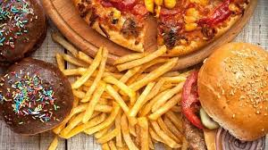

![[kontak]](image/tele.png)
Perbedaan yang mencolok antara fast food dan junk food adalah soal kandungan nutrisi. Junk food sudah pasti bukan makanan sehat karena rendah gizi. Selain itu, biasanya junk food tinggi lemak, kolesterol, garam, hingga bahan pengawet. Sebaliknya, tidak semua fast food buruk bagi kesehatan. Meski ada sejumlah makanan fast food yang juga masuk kategori junk food. Sebagai contoh, cilok termasuk fast food dan juga junk food karena cara penyajiannya cepat tapi rendah gizi. Contoh lainnya, buah potong adalah fast food atau makanan cepat saji yang bukan junk food. Nah, sudah paham perbedaannya?
Sesuai namanya, fast food atau makanan cepat saji merupakan jenis sajian yang dapat disiapkan secara cepat. Meski dapat disajikan dalam waktu singkat, tampilannya yang menarik serta harganya yang cukup terjangkau membuat fast food digemari banyak orang dari berbagai usia. Sedangkan, junk food merujuk pada makanan olahan dengan tambahan aneka perasa agar cita rasanya semakin menggugah. Tak jarang pula junk food, disajikan dengan tampilan dan warna yang menarik sehingga membuat banyak orang penasaran untuk mencicipinya. Namun di balik tampilannya yang menarik, tingginya penambah rasa membuat junk food minim kandungan gizi, sehingga kurang baik dikonsumsi setiap hari. Hal ini juga yang melahirkan istilah junk food atau makanan sampah karena minimnya kandungan gizi.

Junk food atau yang berarti makanan rendah-gizi adalah istilah untuk makanan yang nggak sehat atau memiliki sedikit kandungan nutrisi. Junk food juga bisa disebut sebagai makanan nirnutrisi. Sedangkan fast food adalah makanan cepat saji yang sebelumnya sudah dilakukan proses pengolahan tahap awal sehingga saat ada pesanan hanya melanjutkan proses pengolahan lanjutan yang waktunya relatif lebih cepat.
Junk food dianggap berbahaya karena memilik kadar lemak dan garam yang sangat tinggi karena biasanya sudah digoreng atau dipanaskan berkali-kali. Contoh junk food ialah mie instan, hamburger, pizza, hot dog dan kentang goreng. Lalu, tidak semua makanan yang tergolong fast food itu tidak sehat. Contoh fast food yang baik dikonsumsi misalnya adalah buah potong segar. Asupan ini juga termasuk cepat saji, namun nggak membahayakan kesehatan.
Baik fast food dan junk food menggunakan bahan pengawet. Yang membedakannya adalah jenis pengawetnya. Durasi pengawet fast food akan menyusut setelah makanan dimasak, bercampur dengan bumbu lainnya. Nggak heran, olahan fast food seperti burger, steak hingga kentang goreng akan mudah basi. Sedangkan, pengawet pada junk food memiliki durasi lebih lama lantaran diaplikasikan saat proses pengolahan makanan sudah selesai.
![[beranda]](image/back.png)